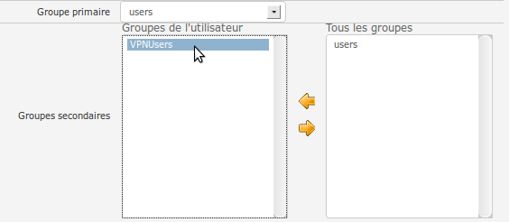
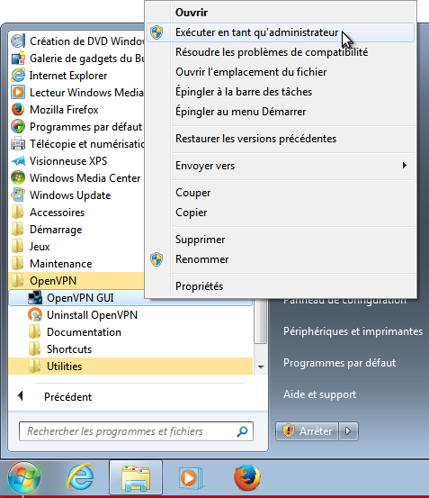
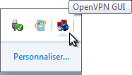
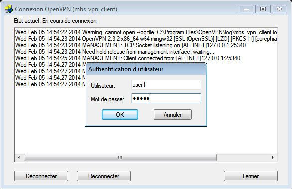

Everything is done thanks to MSS, the parameters can be entered in the MMI.
| the installer is little bit buggy, it seems it does not clean the registry, so if it must be reinstalled the new installation may use the registry keys from the previous which is not what we want. |



Select the icon in the taskbar.
Right click then "connect". The name and password of an authorized user has to be filled.